Ανδρεαδάκης Αντώνης 2013030059
Αναθεωρημένη έκδοση (Νοέμβριος 2026): στην άσκηση 2 διορθώθηκαν οι αποδείξεις των ερωτημάτων (b) και (c) και ξαναγράφτηκε το ερώτημα (d) μετά από διόρθωση του κώδικα. Οι ασκήσεις 1 και 3 παραμένουν όπως στην αρχική αναφορά.
Για την άσκηση αυτή, καλούμαστε να απαντήσουμε στο ερώτημα: Κατά τη διαδικασία της ταξινόμησης, σε ποιο σημείο είναι ιδανικό να εφαρμοστεί επιλογή των χαρακτηριστικών (feature selection); Για τα δεδομένα προσομοίωσης του πειράματός μας (ασθενείς με αυτισμό ή όχι), δοκιμάστηκαν οι εξής τεχνικές:
Ενδεικτικά:
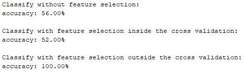
Στην άσκηση αυτή, σκοπός ήταν η δημιουργία του πιο απλού νευρωνικού δικτύου που μπορεί να υπάρξει. Δηλαδή ένα δίκτυο μόνο με είσοδο και έξοδο, χωρίς κρυφό επίπεδο. Ως συνάρτηση ενεργοποίησης δικτύου, χρησιμοποιήθηκε η sigmoid συνάρτηση (την οποία έχουμε συναντήσει σε παλαιότερο σετ ασκήσεων) και ορίζεται ως f(z) = 11 + e−z. Για τον υπολογισμό του σφάλματος, μεταξύ της πρόβλεψης και της πραγματικής τιμής, χρησιμοποιήθηκε η συνάρτηση cross-entropy που ορίζεται ως:
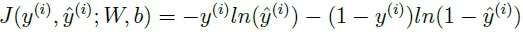
Η υλοποίηση του κώδικα έγινε τόσο σε matlab όσο και σε python.
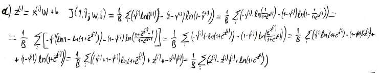
Ξεκινάμε από τη μορφή του ερωτήματος (a). Το z(i) εμφανίζεται μόνο στον i-οστό όρο του αθροίσματος, οπότε παραγωγίζουμε μόνο αυτόν:
∂J∂z(i) = 1B ∂∂z(i) [ z(i) − z(i)y(i) + ln(1 + e−z(i)) ] = 1B [ 1 − y(i) − e−z(i)1 + e−z(i) ]
Επειδή 1 − e−z(i)1 + e−z(i) = 11 + e−z(i) = f(z(i)) = ŷ(i), παίρνουμε
∂J∂z(i) = 1B ( ŷ(i) − y(i) ).
Ο παράγοντας 1/B προέρχεται από τον μέσο όρο στο batch. Για το σφάλμα ενός μόνο δείγματος (B = 1) η παράγωγος είναι −y(i) + ŷ(i), όπως ζητείται.
Από τη σχέση z(i) = x(i)W + b έχουμε ∂z(i)∂W = (x(i))T και ∂z(i)∂b = 1. Με τον κανόνα της αλυσίδας και το αποτέλεσμα του (b):
∂J∂W = Σi ∂z(i)∂W ∂J∂z(i) = 1B Σi (x(i))T ( ŷ(i) − y(i) ) = 1B XT(Ŷ − Y)
∂J∂b = Σi ∂z(i)∂b ∂J∂z(i) = 1B Σi ( ŷ(i) − y(i) )
Εδώ X είναι ο πίνακας B × 2 με γραμμές τα δείγματα x(i) του batch και Ŷ, Y τα διανύσματα B × 1 των προβλέψεων και των ετικετών. Η παράγωγος ως προς το W έχει τις ίδιες διαστάσεις με το W (2 × 1). Αυτές ακριβώς τις δύο σχέσεις υπολογίζει η συνάρτηση backward.
Για το forward propagation του NN, χρειάστηκε να υπολογιστεί η είσοδος πολλαπλασιασμένη με τα βάρη και να προστεθεί το bias. Έπειτα, το αποτέλεσμα αυτό δίνεται ως είσοδος στην sigmoid συνάρτηση κι έτσι βρίσκουμε την έξοδο του δικτύου μας. Στη συνέχεια, αξιολογούμε το αποτέλεσμα με χρήση της cross-entropy. Για να ελαχιστοποιήσουμε αυτές τις απώλειες και να μπορέσουν να ανανεωθούν οι τιμές των βαρών και το bias του δικτύου, γίνεται μια «ανατροφοδότηση» της προβλεπόμενης εξόδου στο δίκτυο. Η διαδικασία αυτή λέγεται back propagation. Με την εύρεση των επιθυμητών παραγώγων, ανανεώνονται τα βάρη και το bias όπως φαίνεται στον κώδικα.
Πιο συγκεκριμένα, για κάθε batch X (πίνακας B × 2) με ετικέτες Y (B × 1) ο κώδικας υπολογίζει:
Οι δύο υλοποιήσεις (matlab και python) χρησιμοποιούν τις ίδιες ρυθμίσεις, ώστε τα αποτελέσματά τους να είναι συγκρίσιμα. Κάθε χαρακτηριστικό (βαθμός) κανονικοποιείται ξεχωριστά, αφαιρώντας τη μέση τιμή του και διαιρώντας με την τυπική του απόκλιση. Τα βάρη αρχικοποιούνται τυχαία από κανονική κατανομή με διασπορά 2/(2 + 1) και το bias στο μηδέν. Το batch έχει 8 δείγματα και μετακινείται κατά ένα δείγμα κάθε φορά (93 batches ανά εποχή), ο ρυθμός μάθησης είναι η = 0,001 και η εκπαίδευση διαρκεί 500 εποχές. Ελέγξαμε επίσης το backward και στις δύο υλοποιήσεις συγκρίνοντας τις παραγώγους με αριθμητικές παραγώγους (πεπερασμένες διαφορές) και οι τιμές συμπίπτουν.
Σε σχέση με την αρχική υποβολή διορθώθηκαν οι αποδείξεις των ερωτημάτων (b) και (c) και ο κώδικας: η κανονικοποίηση συγχώνευε τα δύο χαρακτηριστικά σε ένα (διαίρεση πινάκων / αντί για ./), το batch είχε 9 δείγματα αντί για 8, η cross-entropy ήταν άθροισμα αντί για μέσος όρος και η πιθανότητα του παραδείγματος [45, 85] δεν υπολογιζόταν σωστά. Γι' αυτό οι τιμές του epoch_loss και της πιθανότητας που δίνονται εδώ διαφέρουν από εκείνες της αρχικής αναφοράς.
Τα αποτελέσματα των δύο υλοποιήσεων φαίνονται στον παρακάτω πίνακα. Ο κώδικας matlab εκτελέστηκε σε GNU Octave με randn('state',1) και ο κώδικας python με np.random.seed(0).
| MATLAB | Python | |
|---|---|---|
| epoch_loss, εποχή 1 | 1,8779 | 0,4384 |
| epoch_loss, εποχή 55 | 0,5551 | 0,3178 |
| epoch_loss, εποχή 500 | 0,2310 | 0,2254 |
| Βάρη W μετά την εκπαίδευση | [2,375 2,174] | [2,533 2,319] |
| Bias b μετά την εκπαίδευση | 0,897 | 0,963 |
| Πιθανότητα για το παράδειγμα [45, 85] | 63,96% | 65,02% |
| Accuracy στα δεδομένα εκπαίδευσης | 90,00% | 90,00% |
Το epoch_loss φθίνει συνεχώς και στις δύο υλοποιήσεις. Η εκπαίδευση σε matlab ξεκινά από μεγαλύτερο σφάλμα, επειδή έτυχε τα αρχικά βάρη να είναι χειρότερα, όμως μετά από 500 εποχές οι δύο υλοποιήσεις καταλήγουν πρακτικά στην ίδια τιμή (περίπου 0,23). Με 55 εποχές το σφάλμα είναι ακόμη αισθητά μεγαλύτερο, γι' αυτό και κρατάμε το num_epochs = 500.
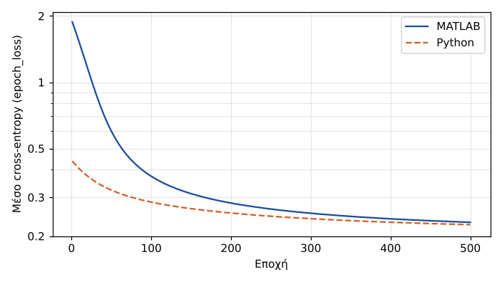
Το δίκτυο πετυχαίνει accuracy 90% στα δεδομένα εκπαίδευσης, δηλαδή ταξινομεί λάθος 10 από τα 100 δείγματα, τόσο σε matlab όσο και σε python. Για το παράδειγμα [45, 85] προβλέπει πιθανότητα περίπου 64% να ανήκει στην κατηγορία 1 (63,96% σε matlab και 65,02% σε python), άρα το κατατάσσει στην κατηγορία αυτή. Στο παρακάτω γράφημα φαίνονται τα δεδομένα και το όριο απόφασης (ŷ = 0,5) των δύο υλοποιήσεων. Τα δύο όρια σχεδόν ταυτίζονται.
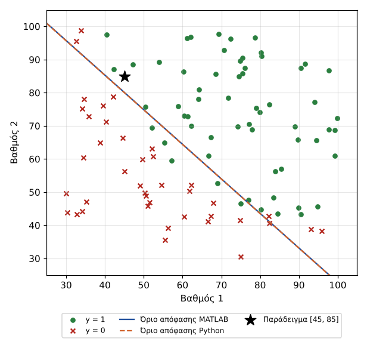
Μετά από 500 εποχές το σφάλμα εξακολουθεί να μειώνεται αργά, δηλαδή με ρυθμό μάθησης 0,001 το δίκτυο δεν έχει συγκλίνει πλήρως. Για σύγκριση, λύνοντας το ίδιο πρόβλημα μέχρι τη σύγκλιση (μέθοδος Newton σε όλα τα δεδομένα μαζί) το μέσο cross-entropy κατεβαίνει στο 0,2035, η πιθανότητα για το [45, 85] γίνεται 77,6% και το accuracy είναι 89%. Η ταξινόμηση των δειγμάτων επομένως πρακτικά δεν αλλάζει, η πιθανότητα όμως του παραδείγματος θα αυξανόταν αν συνεχίζαμε την εκπαίδευση.
Τέλος, στον κώδικα python συγκρίνουμε με τον έτοιμο ταξινομητή LogisticRegression του sklearn, ο οποίος εκπαιδεύεται στο 80% των δεδομένων και ελέγχεται στο υπόλοιπο 20% (20 δείγματα, τυχαία επιλογή). Στην παραπάνω εκτέλεση έδωσε accuracy 75%. Επειδή το σύνολο ελέγχου είναι πολύ μικρό, η τιμή αυτή αλλάζει αρκετά από εκτέλεση σε εκτέλεση.
Στην τελευταία άσκηση του σετ, κατασκευάζουμε ένα Convolutional Neural Network για την αναγνώριση φωτογραφιών ρούχων. Πρώτα, παρακολουθούμε την εξέλιξη των δεικτών accuracy πάνω στα δεδομένα εκπαίδευσης και τον δείκτη validation accuracy στα δεδομένα επικύρωσης. Όταν ο αριθμός epochs είναι 400, βλέπουμε στο παρακάτω γράφημα την κλιμάκωση των δεικτών:
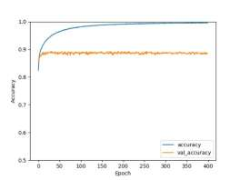
Παρατηρούμε ότι το accuracy τείνει στη μονάδα, ενώ το validation διατηρείται σταθερό κοντά στο 0,9.
Παρακάτω βλέπουμε την πρόβλεψη του μοντέλου:
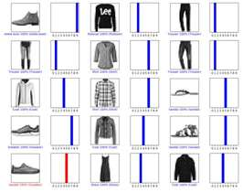
Μειώνοντας τον αριθμό του epochs απο 400 σε 50 και δοκιμάζοντας διάφορους optimizers, οι οποίοι παρέχονται από το keras api (αλγόριθμος adam, sgd, rmsprop, nadam, adamax, ftrl), παραθέτουμε τις παρακάτω εικόνες στις οποίες παρουσιάζεται το accuracy και το validation για κάθε έναν από τους αλγορίθμους και τις προβλέψεις τους. Η σύγκριση αυτή μπορεί πλέον να επαναληφθεί με την εντολή python fashion.py compare.
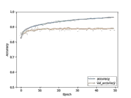
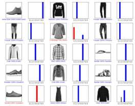
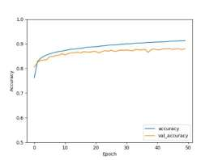
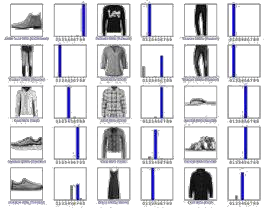
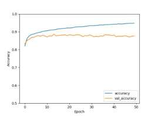
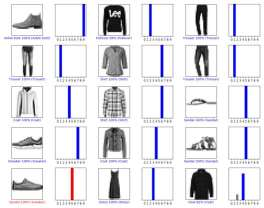
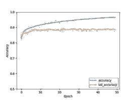
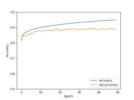
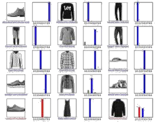
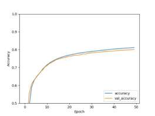
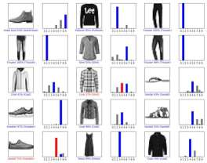
Με παρατήρηση όλων των παραπάνω, καταλήγουμε στο συμπέρασμα ότι ο adam είναι ο ιδανικότερος για το πείραμά μας, καθώς έχει το μεγαλύτερο accuracy και validation accuracy.
Στη συνέχεια, κατασκευάζουμε ένα NN σύμφωνα με τις οδηγίες της εκφώνησης. Αρχικά, υλοποιούμε το μοντέλο χωρίς batch normalization και τα αποτελέσματα της ακρίβειας και της πρόβλεψης του μοντέλου φαίνονται παρακάτω:
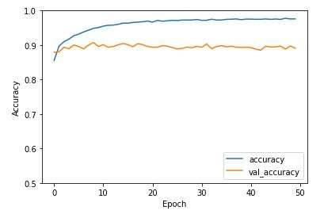
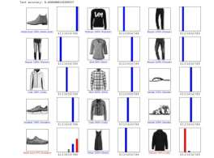
Με batch normalization:
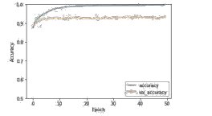
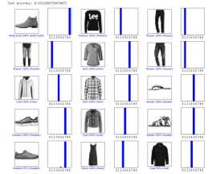
Το ολοκληρωμένο μοντέλο:
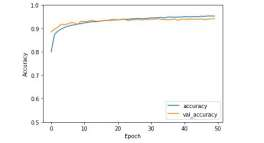
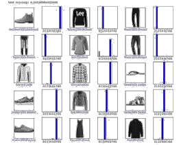
Το validation accuracy αυξάνεται, με την προσθήκη επιπλέον επιπέδων στο μοντέλο και τείνει να ταυτιστεί με το accuracy.